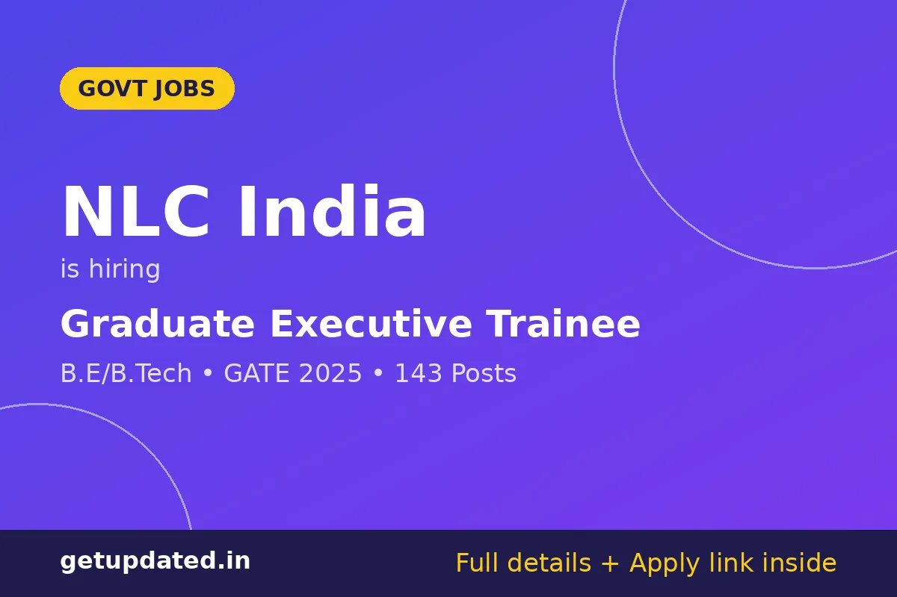

Exim Bank Management Trainee Recruitment 2026 is open for fresh graduates and postgraduates. Export-Import Bank of India has released Advertisement No. HRM/MT/M/2026-27/05 for direct recruitment of Management Trainees across banking operations, treasury, legal, compliance, risk, HR, cyber security and digital technology. The online application window runs from 27 November 2026 to 11 December 2026.
Unlike many bank jobs, several Exim Bank trainee streams are open to B.E/B.Tech and MCA candidates in Computer Science, IT or Electronics & Communication, so IT and EC freshers have a real chance. This guide covers eligibility, dates, selection and preparation, based on the official advertisement.
Apply early
The link goes live on 27 November 2026 and the last date for applying and paying the fee is 11 December 2026. Registration is complete only after the fee is paid online by that date.
Table of Contents
- Quick Highlights
- About Exim Bank
- Vacancy Details
- Eligibility Criteria
- Important Dates
- Salary and Application Fee
- Selection Process
- How to Apply
- Preparation Plan
- Interview Topics
- Common Mistakes to Avoid
- Official Links and Final Checklist
- Final Takeaway
- Also Read
- FAQs
Quick Highlights
| Particular | Details |
|---|---|
| Organisation | Export-Import Bank of India (Exim Bank) |
| Advertisement No. | HRM/MT/M/2026-27/05 |
| Post covered | Management Trainee (MT), various disciplines |
| Experience | None required for Management Trainee posts |
| Application opens | 27 November 2026 |
| Last date | 11 December 2026 |
| Written exam | Tentatively December 2026 (exact date on call letter) |
| Exam cities | Chennai, Guwahati, Kolkata, Mumbai, New Delhi |
| Interview | Mumbai and/or New Delhi |
| Mode | Online only |
About Exim Bank
Export-Import Bank of India is an all-India premier financial institution engaged in financing, facilitating and promoting India's international trade. It works with exporters, importers and overseas projects, which makes its work different from a typical retail bank: credit appraisal, trade finance, treasury, risk and international relations are core functions.
For a fresher, a trainee role here means structured exposure to corporate lending and global trade at a development finance institution. Only Indian citizens can apply.
Vacancy Details
The advertisement covers Management Trainee posts in several disciplines, with reservation for UR, SC, ST, OBC (NCL), EWS and PwBD candidates as per Government of India guidelines. The same notification also advertises Manager (Scale MM II) posts, which need prior work experience, so they are not covered in this article.
| Management Trainee stream | Core qualification |
|---|---|
| Banking Operations (Credit/Loans/Advances) | Graduation + MBA/PGDBA/PGDBM/MMS (Finance/International Business/Foreign Trade) or CA |
| Treasury & Accounts | Same as above |
| International Relations | Graduation + MBA/PGDBA/PGDBM/MMS (Finance/IB/Foreign Trade) or MA Economics |
| Internal Audit | Graduation + MBA (Finance) or CA |
| Compliance | ACS (ICSI) + full-time graduation |
| ESG | Postgraduate in Management / Environmental Science |
| Risk Management | Graduation + MBA (Finance/IB/Foreign Trade) or CA |
| Cyber Security | B.E/B.Tech/M.E/M.Tech/MCA in CS/IT/Electronics & Communication |
| Legal | LLB / Integrated LLB |
| Digital Technology | B.E/B.Tech in CS/IT/ECE, or graduation + MCA |
| Human Resource Management | Graduation + MBA/PGDBM/MMS in HRM/Personnel Management |

Eligibility Criteria
- Indian citizen.
- Minimum 60% aggregate marks or equivalent CGPA in graduation (and in postgraduation where specified).
- Graduation must be a minimum 3-year full-time course; postgraduation a minimum 2-year full-time course.
- For CA candidates, passing the professional examination is sufficient, but ICAI membership is mandatory.
- Cyber Security: full-time B.E/B.Tech/M.E/M.Tech/MCA in Computer Science, IT or Electronics & Communication with 60%.
- Digital Technology: 60% in B.E/B.Tech (CS/IT/ECE), or 60% in both graduation and a 2-year full-time MCA.
- Legal: for regular LLB, 60% marks is required; for integrated LLB, minimum 60%.
- Preferred, not mandatory: MBA/LLB for Compliance; ESG or climate-risk certificates (CFA/GARP) or GHG accounting course for ESG.
The age limit and its cut-off date are given in the advertisement; check them and the age relaxation for reserved categories in the PDF before applying. All eligibility is computed as on the eligibility date stated there.
IT and EC freshers
Cyber Security and Digital Technology are the streams built for you. Keep your 60% aggregate proof and degree details ready.
Important Dates
| Event | Date |
|---|---|
| Advertisement dated | 12 November 2026 |
| Online link opens | 27 November 2026 |
| Last date to apply and pay fee | 11 December 2026 |
| Written examination | December 2026 (tentative) |
Salary and Application Fee
The salary, stipend and fee details are in the full advertisement; they were not confirmed from the portions of the notice used for this article, so we are not quoting any figure. Check the official PDF for the exact fee by category and the pay during training.
One rule matters: you may apply for only one post. If you submit more than one, only the latest completed registration is kept and the fees paid for the others are forfeited.
Selection Process
The process consists of an online written examination followed by a personal interview. Exams are held in Chennai, Guwahati, Kolkata, Mumbai and New Delhi, and the centres may change if too few candidates opt for a city. Interviews are held in Mumbai and/or New Delhi. The exact exam date will come through the call letter and the Bank's website.
Reserved-category candidates should carry certificates. EWS candidates need an Income and Asset Certificate issued on or after 01.04.2025 and before document verification; PwBD candidates (minimum 40% disability) must produce their certificate at the written test and interview, or they may not be allowed to appear.
How to Apply
- Read the full advertisement and confirm your stream's qualification and age.
- Wait for the link to open on 27 November 2026, then open the Exim Bank careers page via the Official Links section below.
- Register and choose one Management Trainee post only.
- Fill in academic details accurately and upload the required documents.
- Pay the fee online on or before 11 December 2026.
- Download and save the confirmation and fee receipt.

Preparation Plan
With the exam tentatively in December, you have only a few weeks after applying. Start now with a fixed split: general aptitude and English, reasoning, then your own stream's subject. Banking and finance candidates should revise financial markets, trade finance, international trade basics and current affairs on RBI and the economy.
IT candidates should revise networking, operating systems, databases, programming fundamentals and security basics (for Cyber Security: cryptography, malware, firewalls, common attacks). Practise timed mock tests every other day and keep one notebook for weak topics.
Interview Topics
- Why Exim Bank and why a trade-finance career.
- Subject depth from your degree: projects, internships, final-year work.
- Basics of exports, imports, letters of credit and foreign exchange.
- Current economic and banking news.
- Situational and ethics questions.
Common Mistakes to Avoid
Avoid these
Applying to more than one post (fees forfeited), applying on the last day when servers are slow, ignoring the 60% rule for any stage of education, and misreading the stream-specific specialisation requirement.
Also do not rely on forwarded messages for fee or age details; use the official advertisement only.
Official Links and Final Checklist
- Stream-wise qualification and 60% marks checked
- Age limit verified in the PDF
- Only one post chosen
- Documents and fee ready before 11 December 2026
Final Takeaway
Exim Bank's Management Trainee drive needs no work experience; apply between 27 November and 11 December 2026.
If your degree matches a stream, use the Official Links section above, apply early and start exam preparation immediately.
Also Read

IOCL Pipelines Division Apprentice Recruitment 2026: 500 Seats for Diploma, Graduate and 12th Pass
Read now →
Google Hiring Associate Product Manager (University Graduate, 2027 Start) in Bengaluru: Apply by Nov 24, 2026
Read now →
IAF AFCAT 01/2027 Recruitment: Flying, Ground Duty Technical and Non-Technical Officers, Apply Online by 11 December 2026
Read now →
NLC India Graduate Executive Trainee Recruitment 2026: 143 Posts via GATE 2025
Read now →Browse all latest jobs & updates →
FAQs
1. What is the last date for Exim Bank Management Trainee 2026?
The last date for applying and paying the fee is 11 December 2026. The link opens on 27 November 2026.
2. Is work experience required?
No, Management Trainee posts need no work experience. The Manager (MM II) posts in the same advertisement are different and are not covered here.
3. Can B.E/B.Tech candidates apply?
Yes, for Cyber Security and Digital Technology, with 60% in CS, IT or Electronics & Communication (MCA also accepted).
4. Can I apply for more than one post?
No. Only the latest completed application is kept and fees for others are forfeited.
5. How is selection done?
An online written exam, tentatively in December 2026, followed by a personal interview in Mumbai and/or New Delhi.
6. Where is the exam held?
Chennai, Guwahati, Kolkata, Mumbai and New Delhi, subject to change if too few candidates opt for a centre.
7. What minimum marks are needed?
Generally 60% aggregate or equivalent CGPA in graduation, and in postgraduation where specified.
8. How do I apply?
Apply online only through the Exim Bank careers page once the link opens on 27 November 2026.